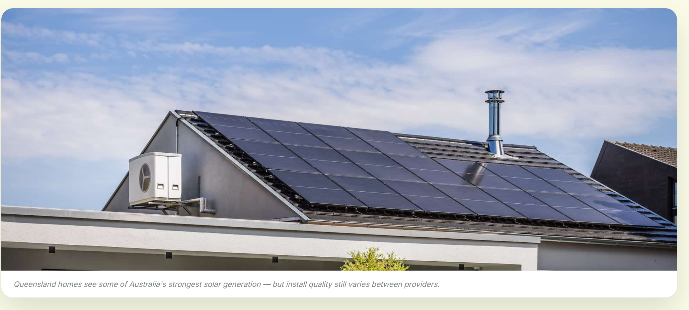

Getting quotes for solar in Queensland? Here's how to ensure a quality install
A good price does not guarantee a good install. Unlike Victoria, Queensland doesn't require an independent inspection after every residential solar installation — which leaves homeowners with less protection unless they arrange extra checks themselves.
The inspection gap
If you're comparing solar quotes in Queensland, the number one thing to remember is this: a good price does not guarantee a good install. Unlike Victoria, Queensland does not require an independent inspection after every residential solar installation, which leaves homeowners with less protection unless they arrange extra checks themselves.

That gap matters because poor installation work is not always obvious. A system can look fine from the ground and still have issues with wiring, isolators, mounting, cable protection, or overall compliance. Those problems can affect safety, performance, warranty coverage, and long-term reliability.
Why solar quote comparisons can be misleading
Most homeowners compare solar quotes by looking at the total price, panel brand, inverter brand, and maybe the installer's reputation. That's a sensible starting point, but it is only part of the picture. What often gets missed is the quality control process behind the quote.
In Queensland, there is no legal requirement for a homeowner to have solar inspected after installation, although the government recommends using licensed or appropriately qualified professionals for close-quarters inspections and checking the system periodically. That means the homeowner is often relying on the installer's own process unless they pay for a separate inspection.
What Victoria does differently
Victoria takes a stricter approach to solar installation compliance. Its system includes an independent electrical inspection regime, and prescribed electrical installations such as solar systems must be inspected before they can be energised. Victorian guidance also sets out detailed compliance expectations for installers, covering matters like wiring, conduit, equipment placement, and safety labelling.
That extra step gives homeowners more certainty. Instead of assuming the job was done properly, there is an independent check that helps verify the system meets the required standard before it is considered complete.
Victoria — independent check
- Independent electrical inspection regime
- Solar systems must be inspected before energisation
- Detailed compliance expectations for installers — wiring, conduit, equipment placement, labelling
Queensland — self-reliance
- No mandatory post-install inspection for residential solar
- Homeowner relies on the installer's own quality process
- Independent checks are optional and arranged at the homeowner's initiative
How Solar Sensei helps
Solar Sensei is built to give Queensland homeowners a stronger level of confidence than a standard quote comparison. The first layer is installer selection: Solar Sensei works with only a small number of installers in each area, chosen for reputation, track record, and business stability rather than just the cheapest price.
The second layer is the important one: every install arranged through Solar Sensei includes a free independent inspection. That gives homeowners a third-party report confirming whether the system was installed to regulation and to the expected standard.

Vetted installer selection
A small panel of installers per area, chosen for reputation, track record and business stability — not just price.
Free independent inspection
Every install includes a third-party report confirming the system meets regulation and the expected standard.
The result is simple. Homeowners get help finding the right system, the right installer, and then an independent check that confirms the work was completed properly.
What to ask before you sign
If you're reviewing quotes now, ask these questions before you commit:
These questions are practical, not technical. They help separate a polished sales pitch from a genuinely well-controlled installation process.
Why this is better value
A lot of people assume independent checking will add cost. With Solar Sensei, it doesn't. The homeowner pays the same system price they would pay going directly to the installer, but with the added benefit of vetting and an independent inspection included at no extra cost.
That makes the service especially useful for people who want more than a cheap quote. If your goal is a solar system that is installed properly, documented properly, and backed by a clear compliance check, Solar Sensei gives you a much stronger position from day one.
Start with the right system — then the right installer.
Run the free analysis to identify your likely solar and battery pathway, then approach the quoting process with confidence.
Start free analysisGENERAL INFORMATION ONLY
This article provides general information for Queensland homeowners. Regulatory settings, inspection requirements and installer practices can change — verify current requirements with your installer and relevant authorities. It does not replace advice from a licensed electrical contractor.